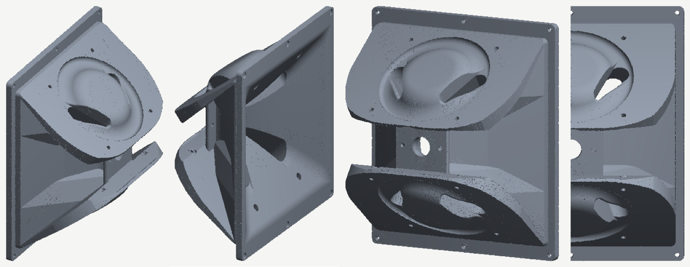
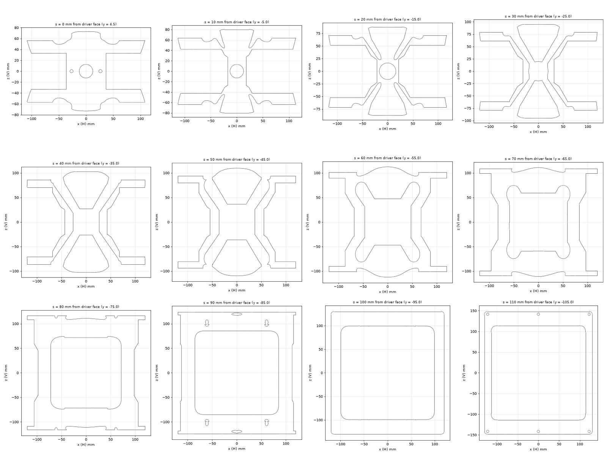
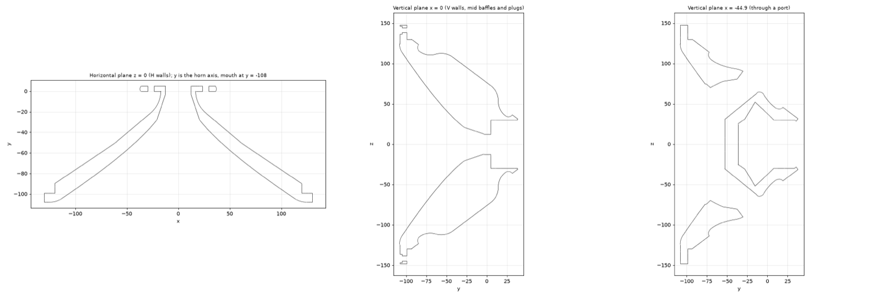
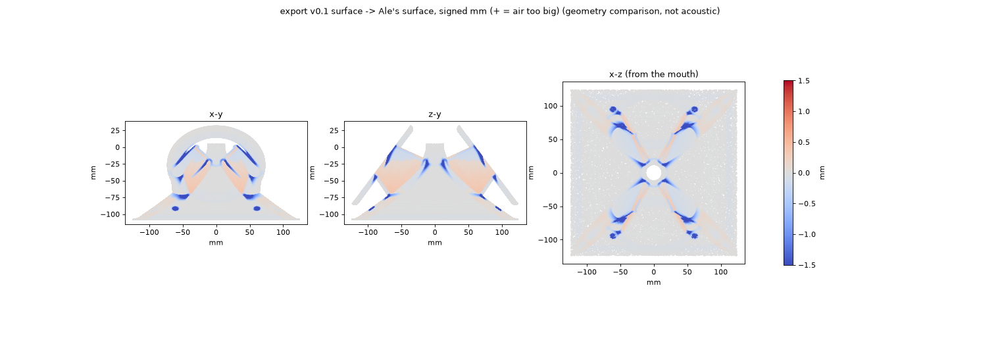
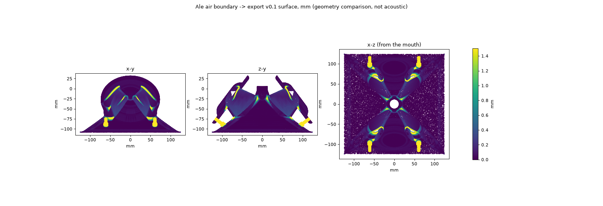
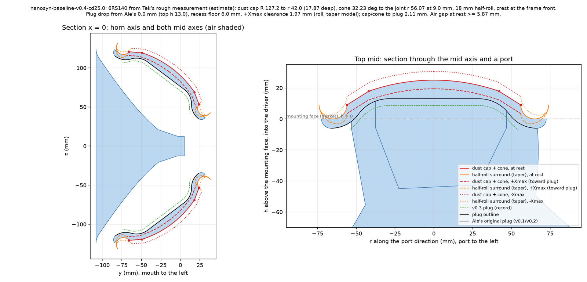
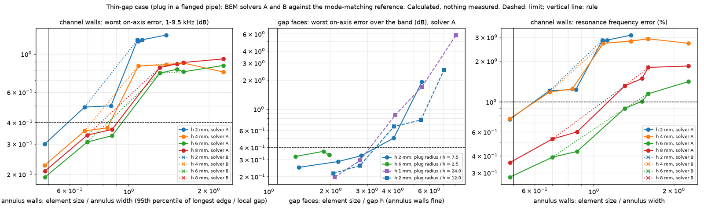

A compact 3D-printed Synergy horn: one compression driver and two 6" mid cones sharing a nearly square horn with deliberately wide walls.
This is a multiple-entry (Synergy) horn: the compression driver fires into the throat and two mid cones feed in through ports in the horn walls, so all three act as one source with even, wide coverage. It is 3D printed.
The co-designer's first model has been rebuilt as a parametric "air model" (the shape of the air inside the horn, ports and mid chambers) so it can be simulated as the baseline. The rebuild matches the original closely. The mid cones have been modelled from a rough measurement of the real driver, which showed that the co-designer's plug inside each cone clears the cone at full excursion, so it needs no change (estimate).
The simulation tools have been tested against exact solutions with deliberately planted faults before being trusted. A first mid-frequency sweep was run but did not pass its convergence check, so its results are indicative only. Sweeps of the current model (mids 100 Hz to 4 kHz; compression driver 1 to 20 kHz) are running; results will follow. Next: those sweeps, then improved horn versions, then a printed interface coupon and prototype, then measurement.
| Type | Synergy / multiple-entry horn: 1 compression driver at the throat, 2 mid cones tapped into the walls |
|---|---|
| Drivers | 2 × Faital PRO 6RS140 8 Ω; 1 × B&C DH350H 16 Ω |
| Bandwidth | 100–120 Hz to 20 kHz, with a subwoofer below; full level only above about 200 Hz |
| Coverage | Deliberately wider walls than 90° (106° as drawn), so directivity passes smoothly from omni at the bottom of the range to horn control from about 1.5–2 kHz. The simulation reports the coverage achieved. |
| Maximum level | 115 dB peak at the listener at 3–6 m (club use) above about 200 Hz; lower level at 100–200 Hz for fill, monitor and speech. Equivalent to 124.5–130.6 dB at 1 m, free field derived |
| Crossover | Horn loading on the compression driver down to 1 kHz (design target); mid to HF crossover set after measurement (starting guess 1.5–1.8 kHz). Mid to sub: to be set. |
| Mid enclosure | Stage 1: a simple reflex box tuned near 100 Hz. Stage 2: a passive cardioid with a lossy rear/side path. |
| Size | Must fit the lab's printers (256 mm and 300 mm cube beds); split parts allowed |
| Use | Fill (flown or wall bracket) and pole or stand top box |
| Manufacture | 3D print; prototypes in PLA |
| Measurement | Critical: will be measured after further development, before the final print |
| 19 Nov 2026 | Project started; driver set and Synergy layout fixed by the brief. |
|---|---|
| 19 Nov 2026 | Horn down to about 120 Hz over a sub, full level only above about 200 Hz: this relieves the main headroom risk, which an earlier study with the same mid cones found at 150 Hz. |
| 19 Nov 2026 | Analyse and simulate the first model as a baseline, then design versions that beat it. The baseline is simulated from a parametric rebuild, not the supplied mesh, because remeshing supplied meshes gave large solver errors in an earlier project. |
| 21 Nov 2026 | Coverage follows the co-designer's wider walls, not 90° × 90°. Why: a smoother transition from omni to controlled directivity. |
| 21 Nov 2026 | Mids go in a reflex box first, then a passive cardioid; the first box leaves room for the lossy path. Sealed in-horn chambers dropped. Why: the co-designer's plan, accepted as the better route to low-frequency output and rear control. |
| 21 Nov 2026 | 6RS140 cone modelled from Tek's rough measurement of the real driver: 25 mm deep at the centre, 19–20 mm at r 37 mm, concave spherical dust cap 84 mm across, 18 mm surround flush with the frame. Replaces the flat-piston and shallow-cap guesses. |
| 21 Nov 2026 | The co-designer's plug inside each cone stays as drawn; modelled clearance at maximum excursion is about 2 mm. The 4.4 mm lowering tried in v0.3 is not needed. |
| 21 Nov 2026 | The first sweep runs despite small point deviations from the co-designer's model around the port edges. Why: the ports will be redesigned, and 1.8 mm is under a tenth of a wavelength at 6.8 kHz derived. |
| 21 Nov 2026 | Sweep bands by source: mids 100 Hz to 4 kHz (a 6.8 kHz limit is irrelevant for them); compression driver 1–20 kHz with bempp-cl as the second solver, on a uniform mesh (graded meshes were rejected after testing). |
Square 240 mm mouth, 113 mm horn depth, Ø25 mm throat, walls flaring to about 106° included, four teardrop ports, two mid baffles at 53° to the axis. It fits the 300 mm bed with 4 mm to spare, not the 256 mm bed.




The parametric rebuild (v0.1) was compared with the co-designer's STL surface by surface, both ways. More than 95 % of every surface lies within 0.5–1 mm. Single points reach up to 1.8 mm on the horn surface and 3.4 mm in the mid chambers, around the port edges, pocket ends and chamber entries. These deviations are accepted for the baseline. Air volume agrees to −0.3 %; throat Ø25.000 mm and depth 113.000 mm.


The co-designer put a 13 mm plug inside each cone. Whether it clears the moving cone at maximum excursion (+5.6 mm) depends on the cone shape, so the cone was modelled three times as knowledge improved:
| v0.2 | Shallow spherical cap, about 20 mm deep (datasheet drawing and a first reading). The plug touched the cone before maximum excursion (first contact at about 2.5 mm). |
|---|---|
| v0.3 | Plug lowered 4.4 mm and the recess floor 0.8 mm to restore at least 1.2 mm clearance at maximum excursion. |
| v0.4 | Tek's rough measurement of the real cone (deeper at the centre, concave dust cap, 18 mm surround flush with the frame). The original plug clears maximum excursion by about 2 mm. With the surround crest 0.5 mm proud: about 1.5 mm (interpolated). An independent check is running. If the crest stood 2 mm proud, clearance would fall to about 0.2 mm, so the crest height is the deciding unknown. |



Latest full run (21 Nov): 137 tests passed, 0 failed; 92 registered checks with 135 planted defects, all caught; 0 errors in 88 registered claims. Each check is tried on a deliberately faulty case before it is trusted.

The first mid sweep did not pass its mesh-convergence check above about 450 Hz (the narrow air layer between cone and plug was meshed too coarsely), and a later attempt could not complete its convergence partner within the machine's memory. No beamwidth, directivity index or impedance is published. Unconverged features, for planning only:
Mids 100 Hz to 4 kHz and the compression driver 1–20 kHz are running on the v0.4 model with the mesh and second-solver checks above. Results to follow; until then there is no baseline directivity result.
No print settings yet. The models so far are air models for simulation, not printable parts.
Sources: Danley, Synergy and Unity horn patents (weight 4); Faital PRO, 6RS140 data sheet (weight 4); Waslo, Synergy Calc v5 manual (weight 3); Danley Sound Labs white paper (weight 3). Renders of the co-designer's model are shown with consent.